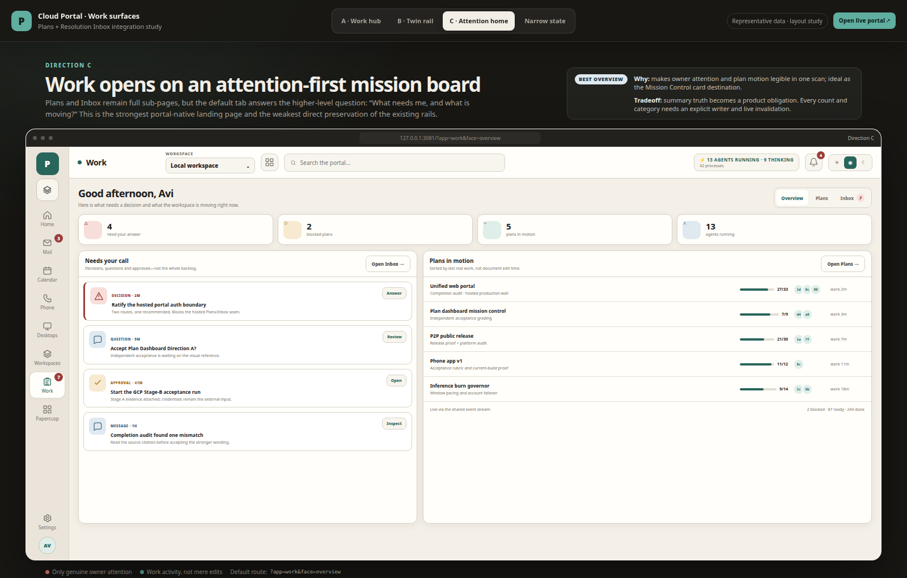
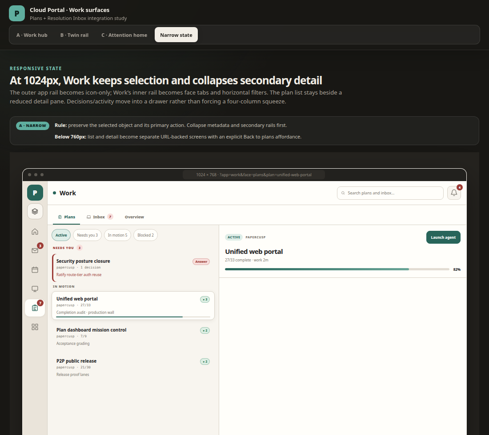

Papercusp cloud portal · design study
Plans + Resolution Inbox, side by side
Four references in one view: the recommended Work hub, the twin-rail alternative, the attention-first home, and the responsive narrow state.
A · Work hubOne Work tab · Plans face
recommended
B · Twin railFirst-class Plans + Inbox apps
fastest access
C · Attention homeNeeds-you mission board
best overview
Narrow state1024px responsive behavior
responsive
Recommendation: Direction A keeps one new portal rail destination while preserving both canonical workflows as URL-backed faces. Click any image for its full-size reference; use the interactive board for the written tradeoffs and narrow-state notes.